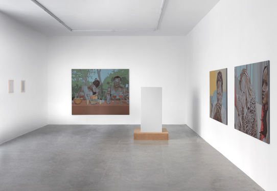
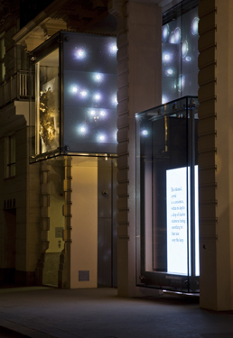
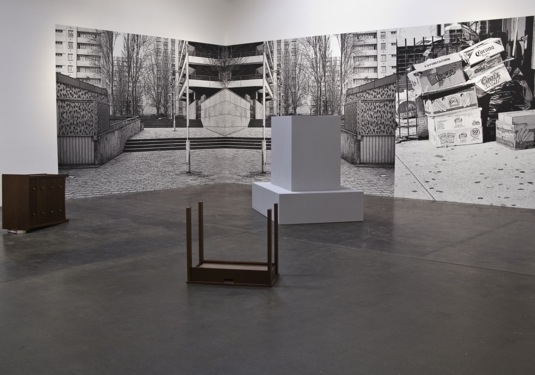
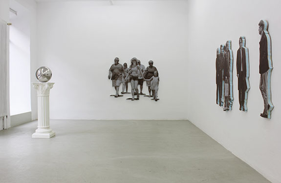
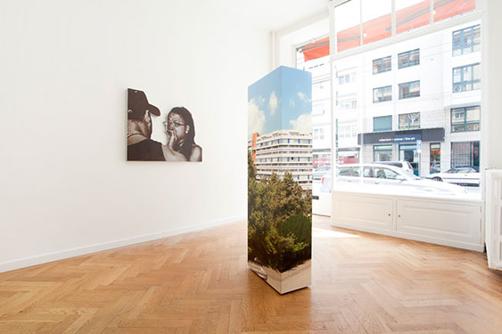
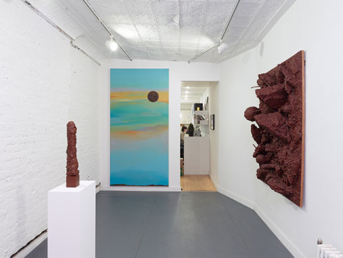

A Holiday in Other People's Misery
Galerie Christian Nagel
Köln

The Totality of All Things as They Actually Exist
Galerie Barbara Weiss
Berlin

The Wolfgang Hahn Prize
Museum Ludwig
Köln

Swarovski Vienna

Suburban Past Time
Metro Pictures
New York

New Realities
Patrick Painter
Los Angeles

The Petrified Forest
Praz-Delavallade
Paris

Social Portraits
Meyer Riegger Galerie
Karlsruhe

Subjective Monuments
Marc Jancou Contemporary
Geneva

Untitled
Home Alone 2